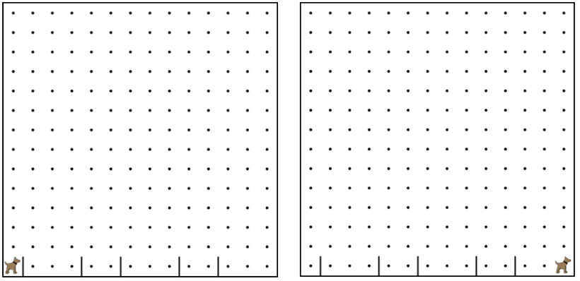

Write a program that has Karel run to the other side of first street,
jumping over all of the hurdles. However, the hurdles can be in random
locations. The world is fourteen avenues long.
編寫一個程序，有卡雷爾運行的第一條街道的另一邊，跳過所有的障礙。然而，障礙可以是在隨機的位置。
世界是14大道長。
You must write a function named jumpHurdle() as part of your solution.
你必須寫一個函數命名的跨欄跳（）作為解決方案的一部分。

while (CONDITION) { 當 (條件) {
// Code that will run while the CONDITION is true.
// Once the CONDITION is no longer true,
// it will stop.
// 當該條件為正確時，將會執行的程式碼
// 一旦該條件不再正確時
// 此程式碼將會停止
}
/* This moves Karel to a wall */
/* 這使卡羅爾移向一面牆*/
while(frontIsClear()){ 當(前方無障礙物()){
move(); 移動();
}
frontIsClear()
前方無障礙物()
leftIsClear()
左方無障礙物()
rightIsClear()
右方無障礙物()
frontIsBlocked()
前方有障礙物()
leftIsBlocked()
左方有障礙物()
rightIsBlocked()
右方有障礙物()
facingNorth()
面向北方()
facingSouth()
面向南方()
facingEast()
面向東方()
facingWest()
面向西方()
notFacingNorth()
不面向北方()
notFacingSouth()
不面向南方()
notFacingEast()
不面向東方()
notFacingWest()
不面向西方()
ballsPresent()
有球()
noBallsPresent()
沒有球 ()